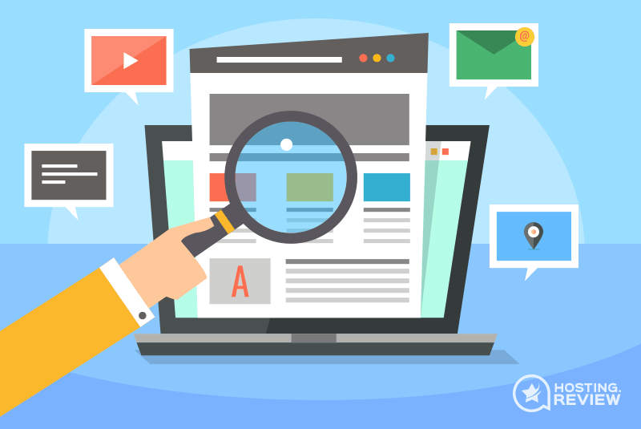

What Sites Website Builders are Best for?
Generally, website builders can be used for any kind of website. From the smallest personal
blogging project to the huge enterprise site. You just simply need to choose the right
platform.
On the contrary, website builders were designed with people with no coding knowledge
in
mind.
They are meant to make building a website available to everyone.
So considering the salaries of web developers and monthly prices of site builders - the
latter
is way cheaper.
Similarly, website builders still limit the possibilities of websites, so they are not
usually
the choice of enterprises.
So we come again to the users without any coding knowledge - website builders will be best
for
personal websites, blogs, small business sites, small- to medium-sized eCommerce, and
similar
sites.
How to Choose the Best Website Builder?
Choosing the right website builder for your site can make it easier creating a website and
save
you a headache in the future.
We prepared a really short 5 step guide which will help you decide what kind of website
building
tool you need:
Step 1: Decide What Kind of Website You are Going to Build
Step 2: Determine Your Budget for the Website
Step 3: Evaluate Your Web Development Skills
Step 4: Think if You Want the Possibility to Switch
Platforms
Step 5: Check if the Host Has All the Features You
Need
Step 1: Decide What Kind of Website You are Going to Build
Depending on if you are building an eCommerce store or a personal website, they will need completely different features, resources, and designs. The price range also differs. So before you even begin choosing a website building platform, you should first decide what is the purpose of your site. 
- Personal websites like small blogs, portfolios, or image galleries are generally the cheapest to launch and maintain.
From our list, you can check out Wix, GoDaddy, and SITE123.
- Informational websites and larger blogs need way more resources though are generally not expensive.
- Informational websites and larger blogs need way more resources though are generally not expensive.
Step 2: Determine Your Budget for the Website
Most of our recommended website builders have free plans. However, the cheapest plans that
will
provide you with a domain name and an SSL certificate starts at $4.68/mo. To get more
features
like custom SEO tools, larger data allowances, eCommerce features, you may need to spend up
to
$30/mo.
So here are simple guidelines:
- Around $5/mo gets you a website builder service that fits small personal websites.
- For around $10/mo you can get a website builder plan that will work for small- to medium-sized business websites and informational sites.
- Anything above $20/mo will get you features that can power an eCommerce store and large business websites.
Step 3: Evaluate Your Web Development Skills
The main purpose of all website builders is to give you the possibility to start a website
without any coding knowledge. This means you will be able to manage every website builder.
But some are more complex than others.
- Drag-and-drop website builders are usually the easiest to use. But they also allow you the most freedom. Consider if you'll be able to arrange everything orderly, choose a nice color scheme, and optimize this kind of site.
- What-You-See-Is-What-You-Get (WYSIWYG) builders are more fit for beginner users. You won't have such design freedom, though templates are curated so you can easily build a professional-looking website.
- Artificial Intelligence (AI) builders can save a lot of time for both beginner users and professionals. You'll simply need to answer several questions and the system will do the job for you. All you need to do - upload your content.
Step 4: Think if You Need the Possibility to Switch Platforms
Most of the website building platforms don't have the possibility to import or export the
website.
Take Wix for example - if you decide to move, you'll need to start the whole building a
website process from scratch. More, you won't be able to change the theme once you chose
one.
Only a few website builders will let you export the website files. This list includes only
Sitejet and Weebly.
So think whether you're ready to stick to the platform or you'll want to move later.
Fortunately, with the majority of builders, you get free trials and can see whether you like
them or not
Step 5: Check the Website Builder Performance
Often forgotten by newcomers, performance is the feature that can make or break a website.
Since July 2018 Google introduced its Speed Update. Google started using page speed as a
factor to rank mobile searches. And please don't say that "Oh, it's just mobile searches,
I'll be fine." Cause no, you won't. In the same 2018, mobile devices took more than 50% of
all website visits. And the percentage keeps growing.
Another fact for you:
According to Google research, the bounce rate increase with each passing second of page load
time for mobile users. So if your page loads in 1 to 3 seconds, the bounce rate
during that
time increases by around 32%. And if your page takes somewhere around 10 seconds to
load -
here's your 123% increase in bounce rates.
Best Website Builder FAQs
We answered all the most common questions about website builders.
How Much Does It Cost to Build a Website?
You can create a website starting with no budget and spending thousands - both ways are
possible. Website builder premium plans usually begin in the range of $10/month. For this,
you can expect to get a domain name for the first year but after that, you'll need to pay
around $10/year for a simple .com domain. So that sums up to around $130 for the second year
- if you choose one of the cheaper plans.
eCommerce and business websites will cost several times more - you can expect to pay over
$20/mo. And if you need a managed service, the price will go even higher.
Best Website Builders - The Verdict
Website builders are great for quickly and easily building websites. Especially if you are
not a pro developer.
We thoroughly tested a bunch of great builders and determined what are they most suitable
for. Here is our list of the best website builders currently:
- Wix - the best website builder for complete design freedom and user-friendly interface.
- SITE123 - the easiest website builder to start your website.
- Sitejet - professional site builder for designers and businesses.
- GoDaddy Website Builder - easy to use platform for quickly building business websites.